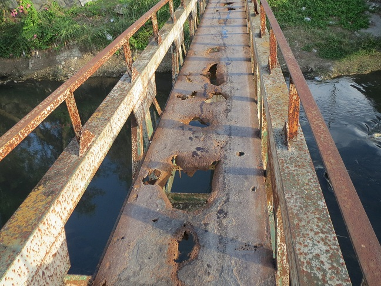

Decides tomar el camino de la derecha. El sendero es más amplio y soleado, y el aire es fresco. Después de caminar un rato, llegas a un puente viejo que cruza un río caudaloso. El puente parece inseguro, con tablas rotas y cuerdas desgastadas. Sin embargo, es la única forma de seguir adelante.
Mientras te preparas para cruzar, escuchas una voz que viene desde el otro lado del río. Es un hombre mayor que te grita: "¡Ten cuidado! El puente es traicionero, pero si logras cruzarlo, te mostraré algo que cambiará tu vida". ¿Qué haces?
